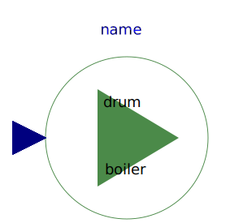

Drum boiler example, see Franke, Rode, Krueger: On-line Optimization of Drum Boiler Startup, 3rd International Modelica Conference, Linkoping, 2003
| Name | Description |
|---|---|
|  DrumBoiler | Complete drum boiler model, including evaporator and supplementary components |
| Additional components for drum boiler example |